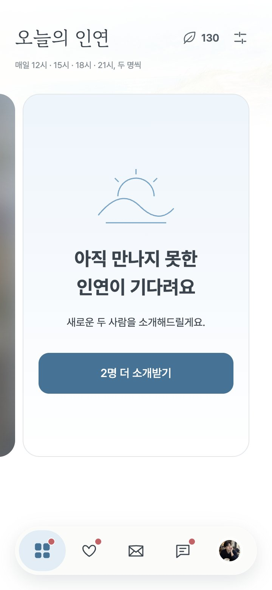
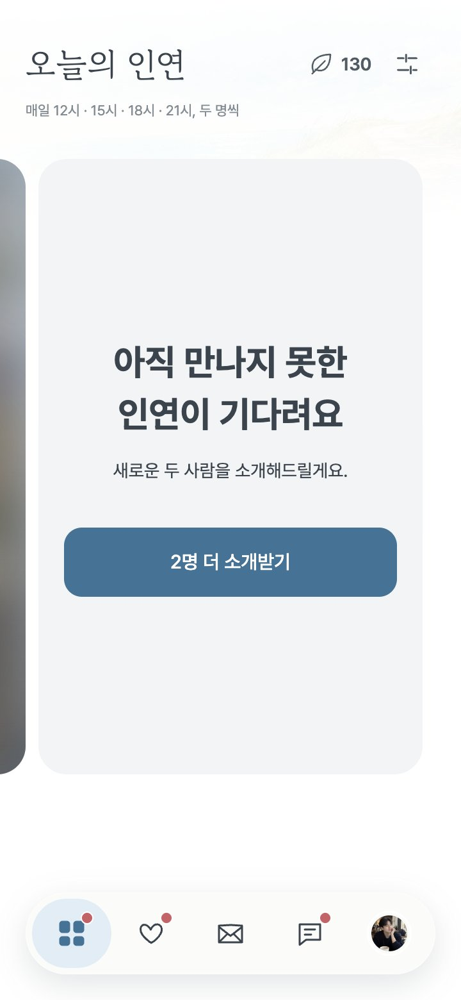
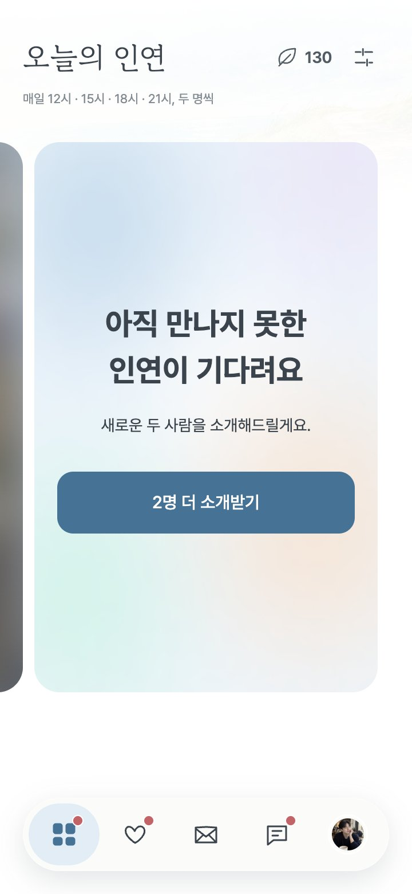
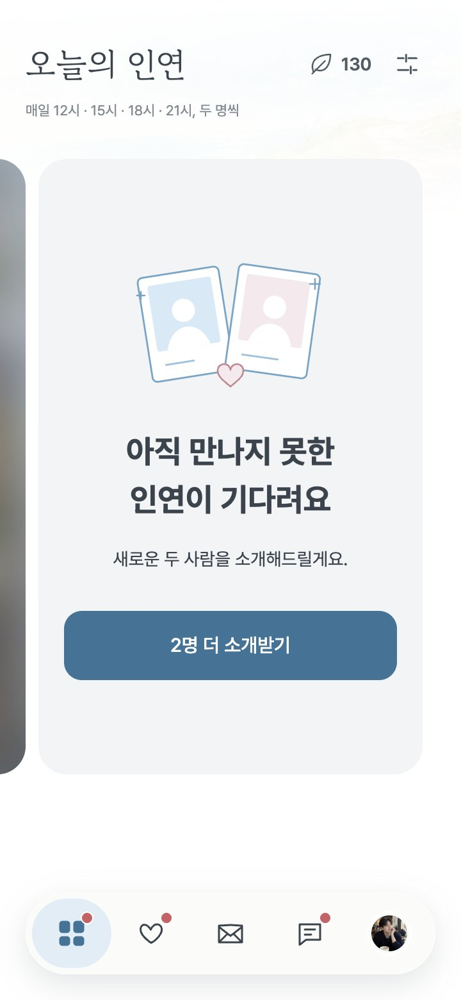
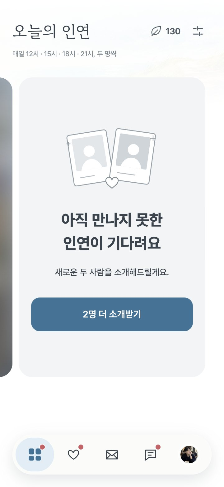

인연 홈 · 2명 더 소개받기 카드
- 지금: 해 뜨는 선 그림 + 흰 카드 · 테두리 + 아주 옅은 하늘 그라데이션. 그림이 무엇을 뜻하는지 애매해요.
- 세 안 공통: 테두리를 빼고(흰 카드 + 테두리 대신) 문구 · 버튼은 그대로.
- M1 글자만: 그림 없이 회색 바탕(cool-neutral-50)에 제목을 28로 조금 키워 가운데. 가장 조용해요.
- M2 뭉개뭉개 그라데이션: 하늘 · 라벤더 · 복숭아 · 민트 빛이 흐림 36으로 번진 바탕(모두 우리 팔레트 100~200). 청량한 필름 빛 번짐 느낌, 글자는 그대로 읽혀요.
- M3 새 그래픽: 사진 두 장이 살짝 기울어 겹치고 가운데 작은 하트 — "새로운 두 사람"을 그대로 그린 손그림 결(선 sky-400, 사진 안 sky-100 · rose-100).
- M4 새 그래픽 · 쿨 뉴트럴: M3와 같은 그림을 쿨 뉴트럴로만 — 선 cool-neutral-400, 사진 안 100 · 200, 아래 줄 300, 하트 흰 바탕 + 500 선. 카드 바탕(cool-neutral-50)과 한 결이라 버튼만 색으로 남아요.
시안

지금해 그림 · 테두리
M1글자만
M2뭉개뭉개 그라데이션
M3사진 두 장 + 하트
M4M3 그림 · 쿨 뉴트럴만